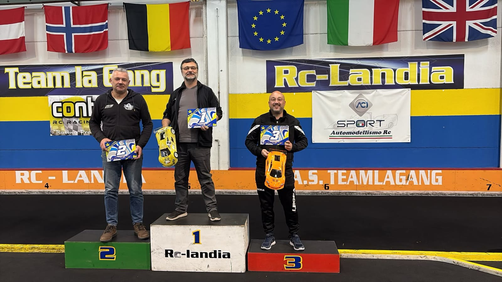

Tre in un punto
A RcLandia Imovilli vince la giornata, Ghidini va più forte di tutti ma la pista gli presenta il conto, Violi non sbaglia mai. Nell'ultima finale arriva il gesto che resta. Alla fine i tre lasciano Scandiano racchiusi in un punto.
Due settimane prima, alla prima prova, aveva vinto Violi davanti a Ghidini e Imovilli, con Ghidini in pole. A Scandiano gli stessi tre si ritrovano davanti a tutti e per l'intera giornata si passano il comando come un testimone.
Prove e qualifiche
La mattina di Ghidini
Nelle prove libere il più rapido è Ghidini, davanti a Imovilli e Venturelli. Nelle qualifiche il copione non cambia: Ghidini vince la prima manche, in cui Violi si ferma dopo pochi giri, e vince anche la seconda, la più veloce della giornata.
Imovilli invece è in salita: nella seconda manche si ferma presto, nella terza non prende il via. Proprio in quella manche Ghidini cede il passo a Piluzza, che si prende la vittoria. Nella quarta e ultima Imovilli si riscatta e vince, mentre Ghidini si ferma dopo pochi giri. La pole però è già sua.
La griglia delle finali vede Ghidini davanti a Imovilli, Piluzza, Violi e Venturelli. Dietro di loro Spaggiari, Montanari e Massara.
Finale 1
La prima di Imovilli
Al via Ghidini scatta davanti e Imovilli gli si mette in scia. Più indietro Massara ha una partenza brillante e guadagna posizioni, mentre Violi ne perde. Al secondo giro Piluzza, terzo, sbaglia da solo e scivola indietro: ne approfittano Venturelli e Violi. Due giri dopo è Violi a sbagliare, e Piluzza gli ripassa davanti.
Per otto giri Ghidini comanda. Al nono sbaglia la prima curva e Imovilli, che non aspettava altro, passa in testa. Ghidini resta secondo finché, a quattro giri dalla fine, tocca da solo l'isola rotonda subito dopo il traguardo e la macchina si ribalta. Prima che il commissario lo rimetta sulle ruote, lo passano Venturelli, Piluzza e Violi.
Imovilli vince senza più pericoli. Alle sue spalle Venturelli, partito quinto, firma un secondo posto che pesa; Piluzza è terzo, Violi quarto, Ghidini quinto.
Finale 2
Il bis di Imovilli
Ghidini parte di nuovo davanti e per otto giri tiene Imovilli alle spalle. Al nono i due arrivano appaiati sull'isola dopo curva 1: Imovilli lo affianca, le macchine si toccano e Ghidini finisce sul cordolo, dove resta incastrato finché arriva il commissario. Imovilli prende il comando e non lo lascia più.
Dietro a Imovilli il secondo posto è una lunga contesa tra Violi e Piluzza, che se lo scambiano due volte prima che Violi lo chiuda a suo favore. Ghidini intanto rimonta, ripassa Venturelli negli ultimi giri e si porta a ridosso del podio.
All'ultimo giro il colpo di scena: Venturelli tocca Piluzza, la macchina di Piluzza vola per aria e Piluzza decide di fermarsi. Il terzo posto passa così a Ghidini, che salva una finale nata storta.
Più indietro Spaggiari chiude sesto per la seconda volta, mentre Montanari in questa finale non prende il via.
Finale 3
Il gesto di Imovilli
Nell'ultima finale Ghidini parte in pole e questa volta non sbaglia nulla. Imovilli lo segue come un'ombra e Violi è terzo. Piluzza, sesto dopo il primo giro, è già quarto al terzo, e da lì fino al sedicesimo l'ordine dei primi non cambia.
Al diciassettesimo giro, nella curva a sinistra, Imovilli tocca Ghidini sulla fiancata. I due proseguono appaiati, poi la macchina di Ghidini si alza contro l'isola e si ribalta. Imovilli potrebbe andarsene e prendersi anche questa finale. Invece si ferma e aspetta che il commissario rimetta in pista Ghidini, per restituirgli la posizione che il contatto gli aveva tolto.
Ghidini vince, Imovilli è secondo. Violi chiude terzo, Piluzza quarto, Spaggiari quinto davanti a Venturelli. Per Massara la finale si complica presto: al quinto giro perde molto tempo e chiude ottavo, dietro a Montanari.
Due finali a Imovilli, una a Ghidini. La giornata è di Imovilli, ma quello che resta di Scandiano è il suo gesto nell'ultima finale. Violi, mai oltre il quarto posto, sale sul podio e resta in testa al campionato, ora appaiato a Imovilli, con Ghidini a un solo punto. Dopo due prove la Vaschetta ha tre leader in un punto.
Alle loro spalle Venturelli, secondo nella prima finale, chiude quarto di giornata e risale in classifica, mentre Spaggiari, sesto nelle prime due finali e quinto nella terza, porta a casa la costanza di chi non sbaglia.
Il podio di giornata

PoleMassimo Ghidini
Giro veloceMassimo Ghidini · 14.962
- Massimo Ghidini2
- Massimo Imovilli1
- Matteo Violi3
4. Filippo Claudio Venturelli · 5. Michele Piluzza · 6. Franco Spaggiari · 7. Andrea Massara · 8. Silvano Montanari